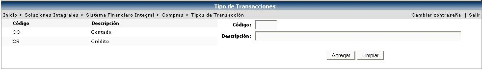

En este catálogo se definirán los tipos de transacción que se van a generar en las cuentas por pagar, cuando se de el Registro de Transacciones en el proceso de Cálculo de Importaciones (éste proceso se explicará más adelante)
